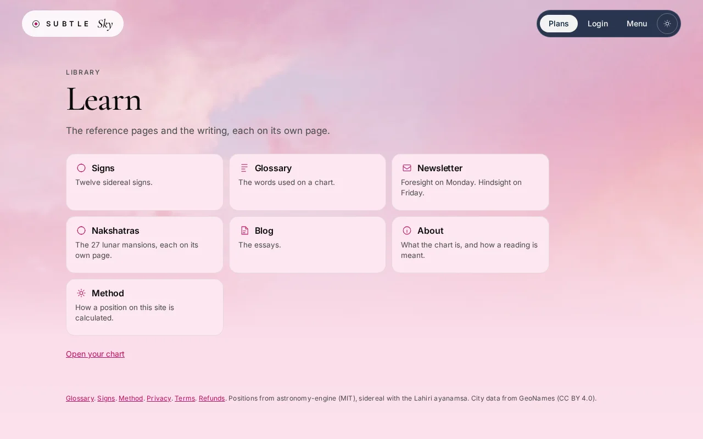

subtle sky
Vedic astrology, charts, timing and a deep library, designed and run by me.
- Role
- Product, design and engineering
- Place
- Los Angeles
- Focus
- Vedic astrology, sidereal
- Disciplines
- Product design, Charts and reports, Content library
The brief
Most Vedic astrology sites are hard to navigate. Subtle Sky is an easy to navigate sidereal and Vedic site for web and mobile, where you track celestial movements, compare birth charts and follow your dashas. It puts everything you would normally do with a traditional Vedic astrologer in the palm of your hand, or on your desktop.
I coded and manage the site. Positions come from the astronomy-engine library, which agrees with NASA JPL data to about one arcminute, in the sidereal zodiac with the Lahiri ayanamsa and whole sign houses.
Results
- 6
- product modules
- 2
- versions: web and mobile
- 27
- nakshatras, each on its own page
- 171
- glossary terms
- 2,000
- cities ranked on the map
What I did
Birth chart
Enter a date, time and place for a sidereal chart with a free reading, or try a sample reading first.
Skyprint
Every planet with its nakshatra and pada, your dasha timeline, yogas, doshas, Manglik check and Sade Sati status, free with an account. Skyprint Fully Loaded adds divisional charts, friendship tables, aspects, the Chalit chart, today’s sky against your chart and your next 12 months, on the page and as a PDF.
Dasha timeline
The Vimshottari timeline: nine chapters over 120 years, with your current chapter and sub-period shown free.
Sky now
The sky as it is right now, with a city picker.
Compatibility
Traditional Ashtakoota matching: two Moons across eight factors, scored out of 36, with a way to invite the other person to enter their own details.
Where to Live
Planet lines on a world map, with 2,000 cities ranked for career, love and home.
SSKY 365
A yearly guide with your year lord, muntha and dated periods.
Other charts
The Conjunction chart and the Tropical chart, from the Sun to Chiron and Black Moon Lilith.
Learn library
27 nakshatra pages, the 12 sidereal signs, a 171-term glossary and 10 essays.
Foresight and Hindsight
A Vedic forecast every Monday and a week in review every Friday.
Accounts and codes
Create an account for your free Skyprint, or redeem a code.
Method and precision
A published method page. Unknown birth times are handled by checking both ends of the day, and houses and dasha dates are left out when the answer differs.
On the site
